Miku Nakano
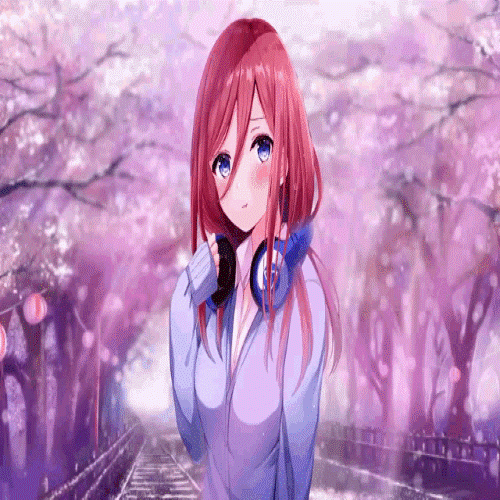
Miku Nakano (中なか野の 三み玖く, Nakano Miku ?) es la tercera hermana de las quintillizas Nakano. Debido a la influencia de Fuutarou, ella es la primera de las hermanas en entablar amistad con él.
Habilidades

Según Yotsuba, Miku es la más inteligente entre las hermanas y su asignatura más fuerte son los estudios sociales. Ella tiene un amplio conocimiento de la historia japonesa. También se muestra que Miku es capaz de imitar perfectamente el aspecto y la personalidad de sus hermanas sin que los demás la reconozcan. Miku tiene capacidades físicas bajas (probablemente la más baja entre las cinco) y es mala para cocinar. También es menos capaz de comprender el razonamiento detrás de las relaciones humanas, lo que implica una falta de conocimiento romántico.
Personalidad
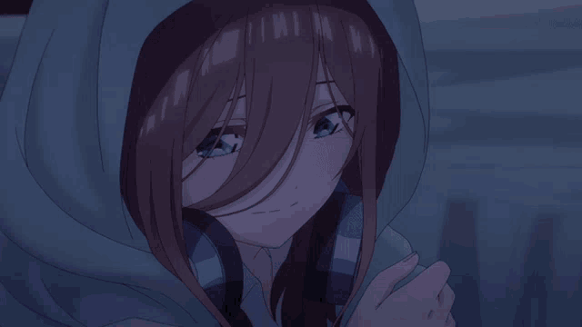
Miku es una chica que se caracteriza por ser la mas timida de sus hermanas, tierna, con falta de autoestima, reservada, introvertida, tiene miedo de expresar sus propios sentimientos , tiene miedo de que sus hermanas conozcan sus gustos, lo cual la llevo a tener inseguridades, a sentirse inferior a sus hermanas y a no poderse declarar al amor de su vida. Es Kudere, callada, posee una actitud pesimista y posee poca fe en si misma, esto hace que no sea muy social, es celosa, es hermosa, cuenta con un muy buen diseño, ella no es superficial, ya que ella se fija mas que todo en los sentimientos y los pensamientos de la persona antes de dejarse guiar por su fisico, fria, que a veces puede ser egoista, a la cual no le gusta socializar mucho, pero que despues de la historia del manga se caracterizo por tener mas confianza en si misma. A ella le cuesta mucho socializar por lo que se siente inferior a sus hermanas.
Miku es una chica silenciosa y reservada que tiene una forma de pensar pesimista y a su vez tener poca confianza, incluso hasta el punto de menospreciarse a sí misma.Futuro señala que Miku no tiene fe en sí misma. Al contrario de su yo reservado, ella puede hablar de una manera directa y no duda en enfrentar a los demás. Miku tiene una obsesión con los generales del período Sengoku. Ella está muy influenciada por sus filosofías, hasta el punto de afectar su comportamiento en la vida real.

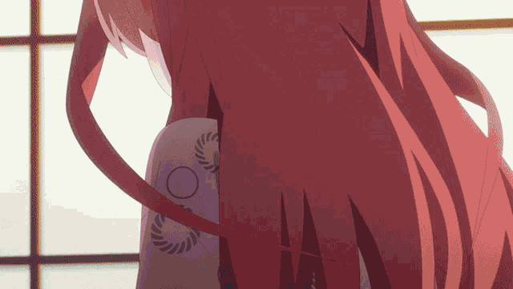
Miku oculta este hecho a todos y se avergüenza cuando Fuutarou se entera. Entre los generales de Sengoku, el que más le gusta a Miku es Takeda Shingen. Esto se insinúa muchas veces a lo largo de la serie. Establece el logo de Takeda como fondo de pantalla de su teléfono. Suele citar los versos de Fūrinkazan, que era la bandera de guerra utilizada por Takeda Shingen. Cuando Fuutarou desafió a Miku a un duelo de conocimiento histórico, Miku es retratada con una armadura idéntica a la de Takeda Shingen. A pesar de su perspectiva ligeramente negativa de la vida, como cuando Miku le pide a Fuutarou que la abandone, ella es la primera hermana en cumplir el Principio de Go-toubun. Miku siempre se recuerda a sí misma seguir este principio, llegando a comprometer su propio interés para asegurarse de que todas sean tratadas por igual. Según Fuutarou, cada quintilliza Nakano tiene sus propias características con respecto a sus hojas. En el caso de Miku, ella tiene buena letra.
Historia de Cain y Abel.
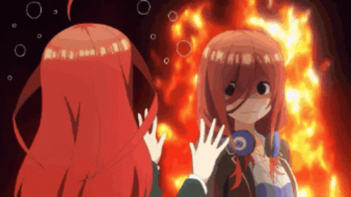
Miku al principio de la historia pensaba que ella podria llegar a ser reemplazada por sus hermanas y que no tenia nada por lo que destacarse. Ella tenia miedo de relacionarse hasta con sus hermanas, incluso hasta de que conocieran sus gustos personales. Esto fue hasta que conocio a Futaro, la persona que haria cambiar la manera como era, empieza a dejar sus miedos de lado y empieza a aceptarse por sus propias cualidades.


Futaro fue la persona que descubrio que Miku tenia un gusto especial por la historia japonesa. Miku con miedo le pidio que no se lo contara a nadie. Es por ello que Miku se enamora de Futaro, ya que este no se burla de sus gustos y le deja ver que ella es igual de habilidosa a sus hermanas. Su enamoramiento hizo que ella se quisiera superar, le da valor para esforzarse y lograr que Futaro la vea de manera diferente. Pese a que la relacion que tenian Miku y Futaro al comienzo no era muy buena, con el tiempo Miku logro darse cuenta de que Futaro era una buena persona.
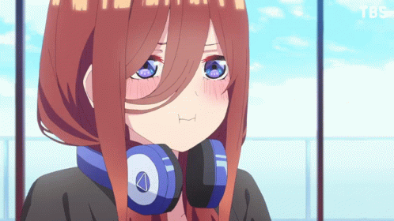

Con el paso del tiempo Miku trataria de gustarle al Futaro, no solo asistiendo a sus clases, sino tratando de mejorar en la cocina. Esto crea una rivalidad con dos de sus hermanas, Nino e Ishika, con Nino ya que ella siente que Futaro los podia separar y con Ishika ya que ella indecisa de su relacion con Futaro. La relacion que tienen Miku e Ishika es algo importante, ya que ambas comienzan teniendo confianza y seguridad entre ellas, incluso Miku le llega a contar las metas que se propone con el fin de conquistar a Futaro, Ishika la ayuda lo mas que puede. Pero lamentablemente Miku estaba indecisa e insegura. Todas sus hermanas trataron de apoyarla lo mas que podian pero con el tiempo se cansaron de que ella tomara la iniciativa.

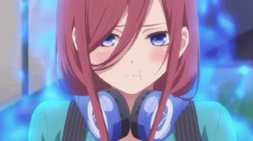
Con el tiempo Ishika iria enamorandose cada vez mas de Futaro, en el campamento escolar Ishika le pregunta a Miku sobre su opinion acerca de que ella saliera con Futaro y en varias oportunidades le pidio tomar su lugar, pero Miku no lo hizo. Pese a que Miku estaba enamorada de Futaro, ella tenia miedo de confesarse, ella llego a pensar de que su hermana Ishika fuera la que se encargara de ayudarla. En el campamento Ishika le ofrece muchas oportunidades a Miku para que pudiera estar a lado de Futaro.
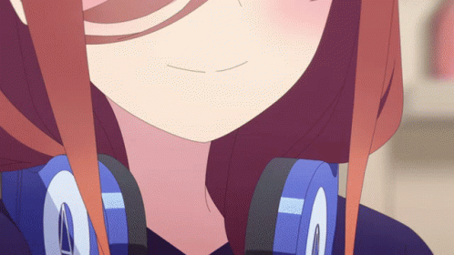
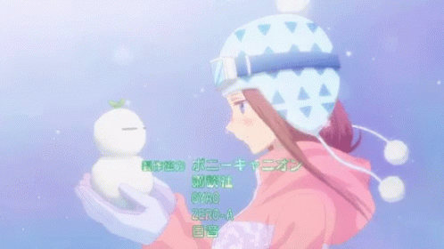
La relacion entre Miku y Nino iria mejorando gradualmente, como la vez en que Nino e Itsuki discutieron y se fueron de la casa. Miku fue a visitar a Nino en el hotel en el que se habia quedado, ayudandole con el miedo que tenia de que sus hermanas se estaban alejando, y le conto que todas sus hermanas estaban cambiando, incluso ella. En esta charla Miku por fin le comento a Nino de su gusto por los generales de la era Sengoku, esto haria que su relacion fuera cada vez mejor. Hasta el punto en el que Nino le enseño a Miku a cocinar, la cual pese a ser muy mala fue su aficion. Gracias a esto Miku fue capaz de preparle un omuraice a Futaro y mas tarde seria capaz de hacer pan y chocolates.
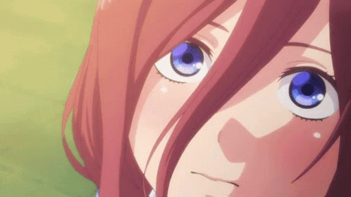
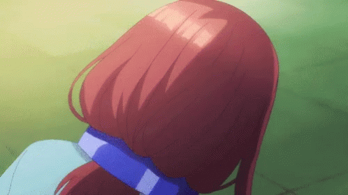
El viaje a las aguas termales, en ese viaje Miku se disfraza de Itsuki para finalizar con la relacion maestro-aprendiz que tenia con Futaro. Mas tarde Futaro se dio cuenta de que esa Itsuki falsa en realidad era Miku, esto lo pudo notar gracias a la molestia que sintio al no haberla podido distinguir, olvidando su objetivo principal.
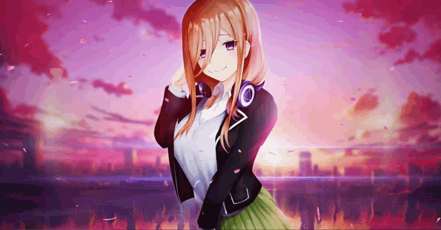
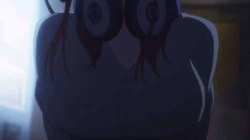
Miku mas tarde se daria cuenta de que su hermana estaba enamorada de Futaro. Miku le llego a proponer que ambos salieran con Futaro. Miku queria que tanto ella como sus hermanas tuvieran una competencia justa por el amor de Futaro. A lo cual Ishika deja de contenerse. Miku aprovecha esta situacion para imponerse metas con el fin de ser una excusa para no declararsele a Futaro, tratandose de impulsar a si misma imponiendose metas. Cada una de las metas que se proponia se las comentaba a su hermana Ishika, ya que Miku tiene miedo de declararse, ya que creia que ella no era lo suficientemente bueno para el, por lo que impulso estas rivalidades. Esto con el fin de que Miku se esforzara a cambiar su forma de ser, y que en el caso de que pierda esa dificil decision seria pospuesta.
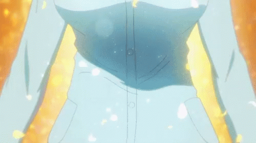
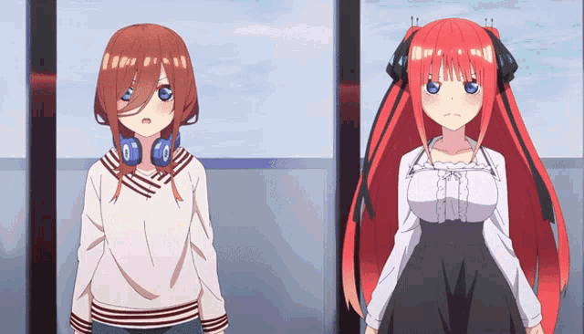
Miku y sus hermanas fueron a Kioto con el fin de que Miku por fin se le declarara a Futaro, pero Miku se saboteaba a si misma, primero porque ella apenas lo vio intento huir, y luego se retracto de ello, diciendole que amaba a su familia y no a el.
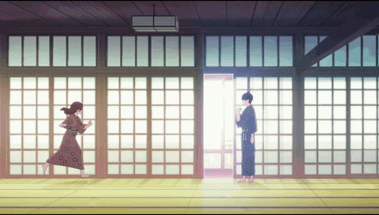
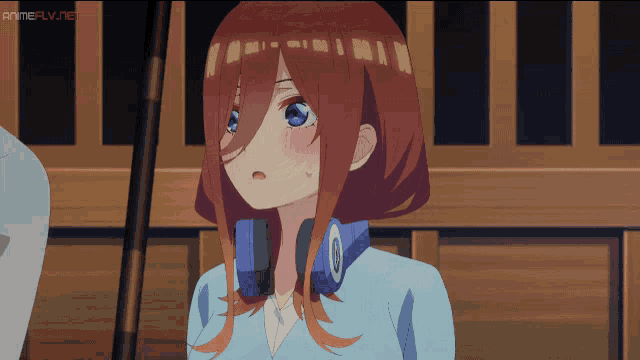
En el viaje que tuvieron en Kioto Ishika se disfrazaba de Miku para verse con Futaro. Pero Miku y Yotsuba la descubrieron, pese a esto Miku no se puso de mal genio, ya que ella reconocio que fue su indecision y cobardia, lo que hizo que su hermana actuara de esa manera, es por ello que cuando se abrazan es una situacion bastante tierna. Ishika ya le habia dado muchas oportunidades pero Miku las rechazo todas por lo cual era algo cruel que ella guardara sus sentimientos.
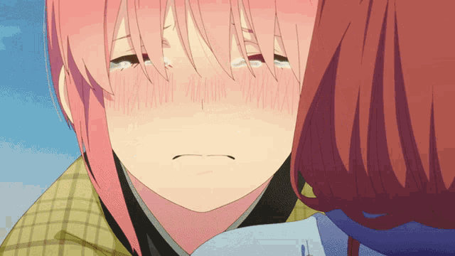

Despues de lo que sucedio con Ishika, Miku se encerro en su habitacion para llorar, ya que estaba enfadada por no ser capaz de admitir sus sentimientos. Nino viendo esta situacion decide ayudar a Miku, recobrando su confianza y diciendole que ella es igual a todas sus demas hermanas y que no debe de sentirse inferior. Gracias a esto, Miku tiene un momento muy agradable con Futaro, le da el pan, hablan sobre la madre de Futaro, y pese a que trato de confesar sus sentimientos, al final no lo hizo. Desde ese dia Miku dejaria de ser timida y seria mas directa en su lucha por gustarle a Futaro. Esto fue lo que termino de sepultar la relacion de amor que sentia Miku por Futaro, ya que su timidez hizo que Yotsuba ganara.
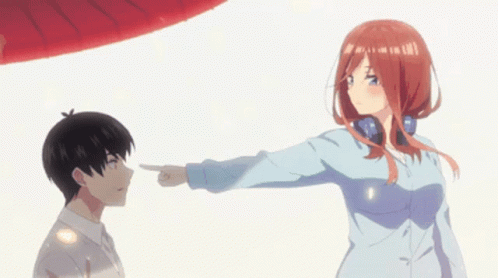

El punto de quiebre de Miku fue cuando pese a estar desarrollando su confianza con el fin de declararse adecuadamente, al final no lo logro hacer, no por el miedo de ser rechazada, sino porque decidio hacerse a un lado para continuar con sus hermanas.
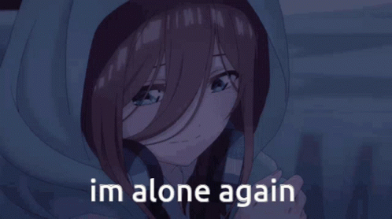
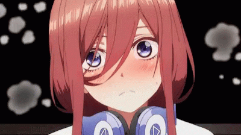
Pero pese a que Miku supero sus miedos e inseguridades, ya era demasiado tarde, Futaro habia elegido a Yotsuba. Miku despues de esta derrota va a visitar a Nino, dejando su rivalidad atras. La relacion entre Miku y Yotsuba pese a que el principio no era muy buena, poco a poco Miku le ayudaria a que saliera con Futaro. Al principio Miku le comento de que ella podia ocupar el lugar de Yotsuba. Pero luego Miku le pide que deje de preocupar a Futaro, y que de una vez por todas empiezen a salir, una vez solucionan sus diferencias Miku le dice que pese a que ella quiera reemplazar a Yotsuba no le es posible, ya que las dos son diferentes. Dejando en claro que esa idea de que cualquier hermana podia ocupar su lugar o viceversa, o que ella inferior a las demas ya no la atormentaba, para este punto Miku ya habia obtenido suficiente amor propio.
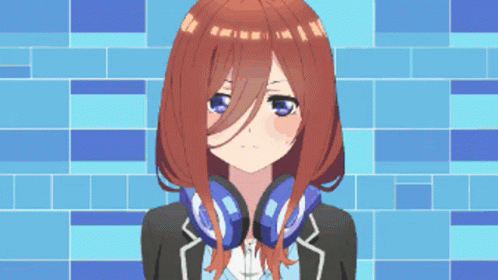
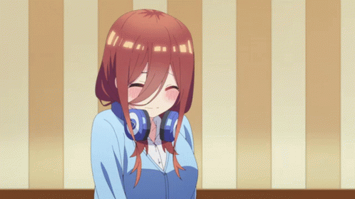
En el viaje que tuvieron en Kioto Ishika se disfrazaba de Miku para verse con Futaro. Pero Miku y Yotsuba la descubrieron, pese a esto Miku no se puso de mal genio, ya que ella reconocio que fue su indecision y cobardia, lo que hizo que su hermana actuara de esa manera, es por ello que cuando se abrazan es una situacion bastante tierna. Ishika ya le habia dado muchas oportunidades pero Miku las rechazo todas por lo cual era algo cruel que ella guardara sus sentimientos.

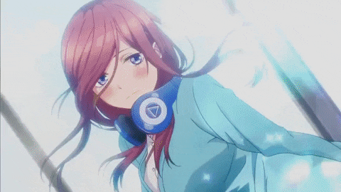
Una vez reunidos en el acuario Miku le comenta a Futaro que no entraria a la universidad, sino que su sueño era estudiar culinaria. Al principio ella tenia miedo ya que Futaro la elogio por los resultados que obtuvo en los examenes, y le dice que hablo con el porque siente que el es una persona especial para ella, y que asi como ella pudo confesarle sus sueños, Miku esperaba que Futaro tomara una decision. Al principio Futaro no entendio a que se referia, pero con el tiempo se dio cuenta de que ya era hora de tomar una decision y confesar sus sentimientos hacia las hermanas Nakano.
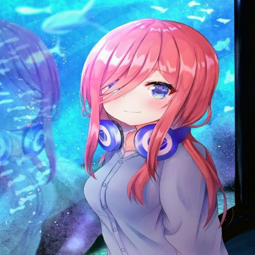
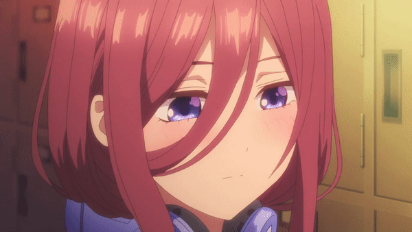
En el festival ocurre un conflicto para saber quien tenia un mejor puesto de comida entre niños y niñas, Miku dejo su timidez y regaño a los miembros de su clase. En el festival Futaro aprovecha la oportunidad y se le declara a todas las hermanas. Despues de esto Futaro se encuentra con una amiga cogidos de la mano, Miku los ve y decide armarse de valor y preguntarle a Futaro acerca de esta chica, a lo que Futaro resuelve el malentendido. Luego de esto, Miku se abalanza sobre Futaro y lo besa, diciendole que ya no se iba a dudar mas en su vida. Aunque ella sea una persona muy dulce y linda, es muy timida, esto hace que haga las cosas demasiado lento, lo cual la lleva a ser la primera en enamorarse de Futaro, pero la ultima en declararse. Con el tiempo Miku iria perdiendo su miedo, y logro tener momentos muy bellos con Futaro, pero lamentablemtente ya era demasiado tarde, Futaro ya habia decidido con cual hermana se iba a quedar.
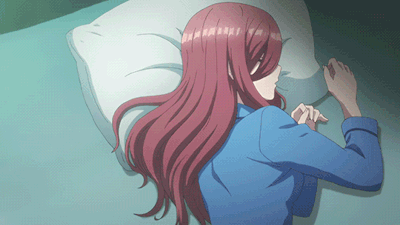
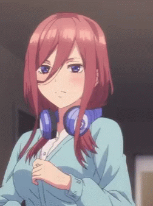
Pese a ir mejorando dia a dia en su vida personal, Miku sigue siendo muy timida y se vuelve muy dependiente de Ishika y de Futaro. Lo cual le genero el miedo de confesarle sus sentimientos a Futaro, y al final no lo hace. Ella trataba de posponer su declaracion de amor, no por el miedo a ser rechazada sino por la poca seguridad que tenia en si misma. Pero lo más importante es que ese enamoramiento, ese proceso que tomó para gustarle a Futaro la llevó a encontrar no solo su vocación, la cual era cocinar, incluso abre una cafetería junto a Nino, sino que también dejaría de ser esa persona tímida que se sentía inferior a las demás, y entendió que ella también tenía su propio valor y ninguna de sus hermanas podría reemplazarla.
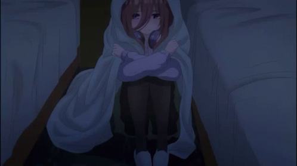